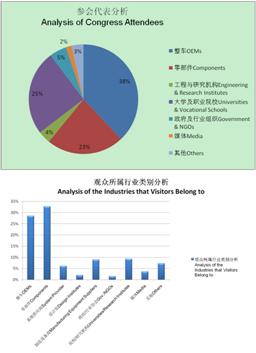

展会总结
展会总结2014中国汽车工程学会年会暨展览会（2014 SAECCE）在沪隆重召开
自2012 FISITA年会在北京顺利召开后，中国汽车工程学会继续以提升学术和技术水平，丰富活动内容、扩大活动规模为发展目标，坚持会议交流和技术展览同时同地同主题紧密结合的模式，在年会平台上导入各类优势资源，以打造中国汽车工程界专业性最强、规模最大、最受行业关注的汽车科技“学术航母”。
2014年10月22-24日，2014中国汽车工程学会年会暨展览会（2014 SAECCE）首次移师上海并再创辉煌。在三天的会议期间，共奉献2场高层访谈、20场专题分会、13场技术分会、3场并行分会，以及试乘试驾、技术展览、技术参观以及更多丰富多彩的同期活动，吸引了海内外1641位会议听众，以及超过8000人次的展览观众，覆盖了美国、德国、法国、西班牙、英国、意大利、瑞典、加拿大、日本、韩国、印度、台湾、香港等17个国家和地区。参会代表数据分析和观众所属行业类别分析，请见下文图表。

在第一天的开幕式大会上，进行了中国汽车工业科学技术奖的颁奖仪式，授予一汽红旗高级轿车系列产品自主研发与技术创新项目为特等奖；并授予包括吉林大学、神龙汽车、江苏业达在内的共计53个单位为一、二、三等奖的获奖机构。之后进行的FISITA荣誉奖章的授奖仪式上，FISITA轮值主席李骏博士则将代表着世界汽车工程界终身成就奖的FISITA Medal，授予给为中国汽车发展做出卓越贡献的郭孔辉院士，这是世界历史上中国汽车工程师第一次获得此项殊荣，既是郭院士本人的成就，也彰显了中国汽车工业的进步和地位的提高。此外，开幕式的最后一个重要环节是中国汽车工程学会与中国汽车光华科技基金会战略合作签约仪式，双方共同发起中国汽车人才培养计划，包括中国大学生方程式汽车发赛、中国汽车造型设计大赛、中国学生越野车大赛及少年工程师项目，为中国汽车产业发现、培养和输送更多更专业的优秀人才。
两场全体大会分别以“低碳汽车”和“自动驾驶还有多远” 两大技术焦点为主题，邀请一汽、上汽、长安、大众、沃尔沃、博世、大陆、德尔福、电装等整车和零部件企业的技术领军人物介绍各自的应对方案以及技术路线，为与会者勾画出各自实现低碳和自动驾驶的技术路线图。
年会的20场专业分会、13场技术分会和3场并行会议，探讨热点前沿技术，跟踪行业核心技术发展，得到了行业诸多资深专家、研究机构、高校、学会专业分会的积极参与，有111篇技术论文被宣读交流，报告数量超过300个，内容涵盖内燃机、电动车、车身、电子、安全、车联网、检测、轻量化等20余个主题。
年会的试乘试驾活动，邀请了博世和通用汽车参与。博世提供了最新主动安全技术体验——自动紧急制动（AEB-VRU）和智能化助力器及能量回收系统（iBooster），通用提供了最新发布的自动驾驶概念车EN-V 2.0体验，这也是通用自动驾驶车EN-V2.0的中国首秀。代表们通过亲身体验，享受了新技术带来的非凡驾驶乐趣，也进一步加深了对主动安全技术和自动驾驶技术的理解。
年会的技术展览，覆盖节能环保汽车，发动机变速器及动力总成，汽车生产与制造装备，汽车电子，车身，测试技术等6方面，共吸引了来自15个国家和地区的109家参展企业，展览面积达到11000平米。展览参观观众超过8000人次。
在年会闭幕式上，张进华秘书长对本届年会进行了总结，让代表第一时间获得了年会的总体信息。除此之外，闭幕式上还发布年会学术观点，对优秀论文、轻量化优秀车型奖、轻量化优秀演讲者奖和最受瞩目创新技术展品颁奖，将这场学术狂欢完美谢幕。
会后，年会安排了泛亚技术中心和同济大学两条技术参观路线，让代表们进一步了解学术界和产业界的试验条件和技术研发现状。
2014 SAECCE无论从学术交流水平、参与嘉宾层次、规模等各个方面，都达到了一个新的高度。2014 SAECCE主要亮点总结如下。
首先是本届年会的学术交流水平大幅提升。一是我们汽车行业的四位院士——郭孔辉院士、钟志华院士、林忠钦院士和李骏院士——齐聚年会，他们或者出席全体大会，或者作为主席组织分会场，或者在分会场做主题演讲，为广大工程师引领技术发展方向。二是两场全体大会邀请到来自整车、零部件的技术领军人物，分享企业战略，为与会者带来精彩的技术报告和讨论。三是年会期间举办的“汽车技术首脑闭门峰会”，来自14家主流自主整车企业的技术中心主任和国内主要高校的汽车学院院长参与，从产学研三方面，探讨在当前互联网为代表的新技术革命影响下，汽车产业应如何突破传统思维模式，通过大胆创新、以技术革命推动生产方式的革命，推动汽车行业的技术发展。与会汽车技术首脑达成高度共识，联合发布“2014汽车技术首脑宣言”，这成为未来汽车技术发展的重要纲领性文件之一，具有十分重要的行业价值。四是今年年会有20场专题分会，由来自国内外企业和高校的资深专家发起和组织，并由他们邀请了一百多位来自国内外的专家学者发表了高水平的技术报告，并进行互动讨论，他们的参与和贡献大大提升了年会的学术水平和影响力。综合以上，在院士、企业技术领军人物、高校和研究机构资深专家学者的大力支持下，年会逐渐在成为一个引领汽车技术发展方向的学术性平台。参会的广大专家和工程师高度认可“低碳化、智能化、轻量化”是未来汽车技术发展方向。为实现低碳汽车目标，传统动力节能技术、轻量化技术、新能源动力系统、以及智能化都是必经的技术路径。而智能汽车与车联网将解决道路安全、能源消耗、环境污染、交通拥堵等问题，最终实现人、车、路与环境的和谐统一。为实现自动驾驶，汽车电子电器架构、传感器、执行机构、云技术方面的技术和应用都需要进一步加强，并且需要解决法规等相关问题。与年会并行举办的“中国轻量化车身会议”上，7款自主开发的车型进行了产品开发数据的深刻解读，展示了我国在汽车轻量化设计、用材、工艺及轻量化技术集成应用方面的巨大进步。
二、年会论文质量也有明显提升。本届年会共收集到685篇论文投稿，经过近200位专家的评审，录取423篇。这些论文凝聚了广大工程师的研究和工作成果，将成为工程师们工作中的重要参考资料。与往届不同，除了刊登《汽车技术》、《汽车工程》等期刊和出版《论文集》外，今年首次尝试与斯普林格出版社（Springer）合作，出版英文论文集精选，并进入EI检索，大大拓宽了行业优秀论文的发表渠道，并扩大了中国汽车技术论文的国际影响力。
三、技术展览初具规模。今年的展品技术水平有了不小的提升。很多企业都拿出了最新科技成果参展，还有2014年度中国汽车工业科学技术奖的获奖产品到场，展示自主研发与技术创新实力。今年技术展览首次借助观众投票选出了最具人气、最具科技含量的优秀展品。展览还邀请到了包括德商会展团、德国巴伐利亚州展团、日本展团的参与，这些海外展团及展商的参与有助于我们为中国的汽车产业搭建一个更国际化的交流平台。为此，企业把全球首发产品和技术带到年会和展览会的意愿在加强，年会技术展也在逐渐成长为引领汽车技术的风向标。
四、注重跨产业交流。以信息技术为主，交叉融合可再生能源、材料、生物等多种技术的第三次工业革命正在深刻影响汽车技术和产业的发展。加快与相关产业和技术的融合，将是汽车行业解决面临的多重挑战的必由之路。本届年会也充分体现了跨产业交流的特点，除了汽车技术首脑闭门峰会关注汽车与互联网的融合外，很多会场都邀请了相关行业的专家到会交流，以专题分会S2：低碳交通的情景分析为例，S2邀请了交通、汽车、互联网、汽车经济四个方面的代表从不同角度进行探讨。这种汽车与相关行业专家同台思想碰撞，形成学术观点的形式，是今年活动的一大亮点。
五、行业参与度越来越高。2014SAECCE，在会议方面，学会不仅导入了诸多自身优势资源，包括车联网、轻量化、电动车、制造装备四大联盟，《汽车工程》、《汽车技术》等核心期刊，以及汽车制造、电动汽车、环境保护、智能交通、电子技术、测试技术、振动噪声、悬架、车身等15个专业分会的力量和资源；而且还积极邀请行业专家、科研院所、企业参与活动组织，获得更多行业资源；积极争取FISITA（世界汽车工程学会联合会）、JSAE(日本汽车工程学会）、KSAE（韩国汽车工程学会）、美国华人工程师协会等国际组织的支持，并在年会上共同组织活动，获得更多国际资源；积极寻求上海嘉定区、安亭镇、上海国际汽车城、上汽、泛亚等地方政府、企业的支持，导入当地资源。在展览方面，坚持与纽伦堡展览公司合作，为技术展览导入更多国际化的资源，提供国际水准的专业服务。全行业的参与和专业力量的导入，让年会的影响力在逐年扩大，国际化程度在逐年提升，专业化水平和学术、技术水平在逐年提升。
2014 SAECCE无论在专题设计的深度和广度，行业、专业和企业参与的广泛性和代表性，广大工程师的现场参与的积极性方面都上了一个新台阶，成为国内规模最大、规格最高、覆盖技术领域最广、专业化程度最强的技术交流平台。